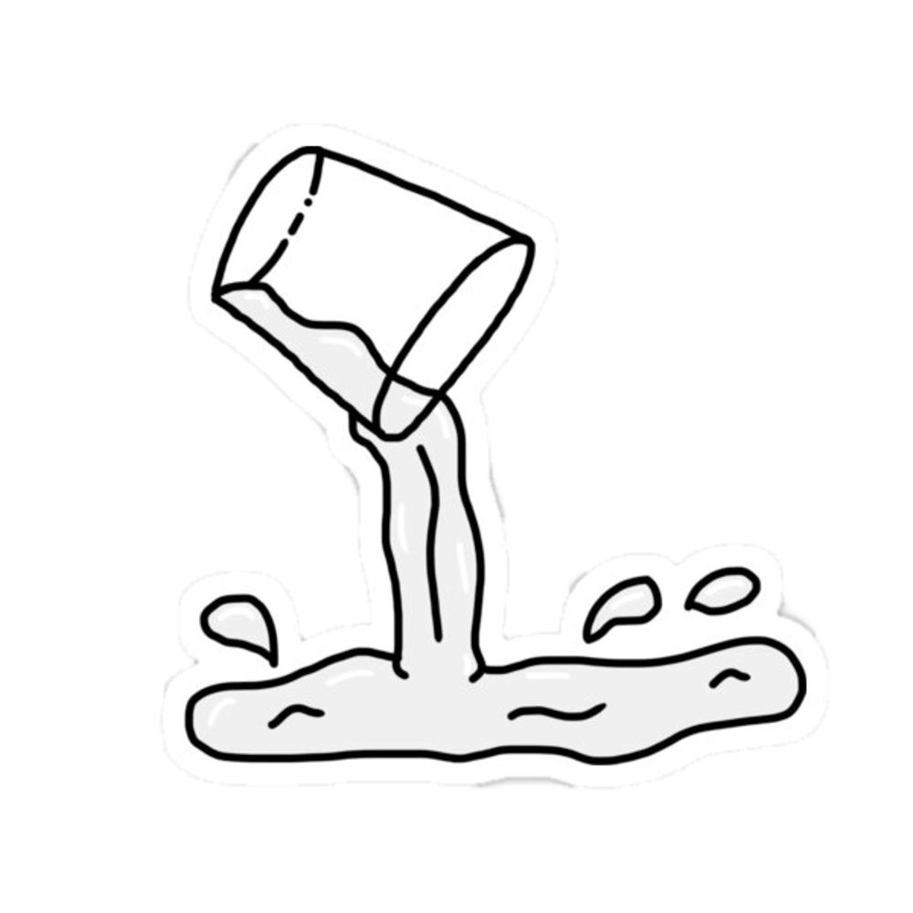
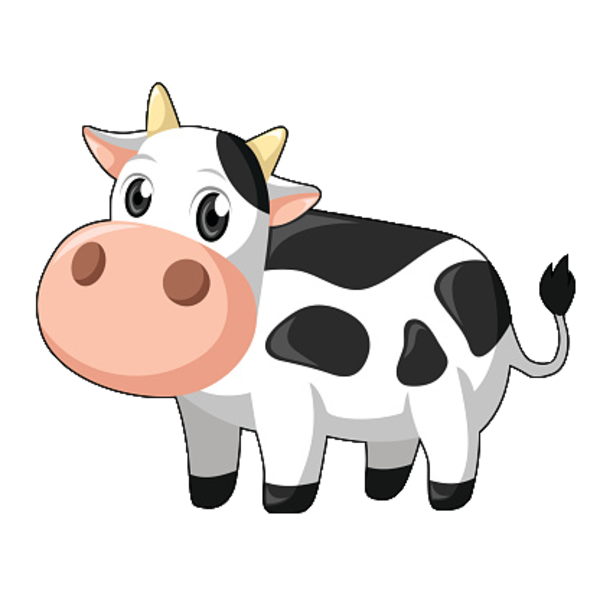

TRUSTED BY HAPPY
TRUSTED BY HAPPY
CUSTOMERS
Welfare of persons engaged in activities relating to livestock, dairy and Poultry.Liaison and cooperation with international organizations in matters relating to livestock and poultry development.Livestock Census.
Explore

Who we really are &
Home
Who we really are &
why choose us
TRUSTED BY HAPPY CUSTOMERS WORLDWIDE
focuses towards creating/strengthening of infrastructure for quality milk testing equipment
Welfare of persons engaged in activities relating to livestock, dairy and Poultry.
Milk is unique among farm commodities.
In the early days of the Nation, dairy farms were relatively small and remotely located.
Associations Serving the
Dairy Industry
01
N M P F
was founded in 1916 to provide dairy cooperatives and their dairy farmer members a voice in the formulation of policy
02
D M I
It is a nonprofit organization devoted to reducing mastitis and enhancing milk quality.
03
N M C
Our delivery process is easy, you receive the plant direct to your door.
Check out our
Sevices
Welfare of persons engaged in activities relating to livestock, dairy and Poultry.Liaison and cooperation with international organizations in matters relating to livestock and poultry development.Livestock Census.
PRIVATE SECTOR
Some common questions
were often asked
How much does a cow eat and drink?
The average dairy cow drinks between 25 to 30 gallons of water and eats about 100 pounds of feed, hay and silage every day. But nothing goes to waste on a dairy farm. Farmers recycle cow's manure as fertilizer for crops and reuse water multiple times to cool the milk, wash the barn and irrigate crops.
Is Raw Milk Better For Those With Lactose Intolerance?
No. The enzyme required to break down lactose, known as lactase, is produced in the human body and is not present in either raw or pasteurized milk. People with lactose intolerance lack this enzyme. Whether milk is raw or pasteurized is irrelevant to lactose digestibility.
What Do Farms Do With All The Manure?
Dairy cow manure is always put to good use. Most of it is spread on the fields as a natural source of fertilizer. Using manure to fertilize the soil has many advantages, including water conservation.
What's Different About Organic Farms?
U.S. dairy farmers are committed to assuring that their animals are well cared for and that proper attention is given to the use of natural resources, no matter if the farm is organic or conventional.
Do Dairy Farms Use Too Much Water?
No, dairy farmers use water responsibly and judiciously. Many conservation technologies are in place so that as little water as possible is used. For example, water used to clean the milking parlor is reused to clean feed alleys and then to irrigate fields. Using manure to fertilize the soil has many advantages, including water conservation.
Do Dairy Farms Produce A Lot Of Greenhouse Gases?
According to the U.S. Environmental Protection Agency's U.S. Inventory of Greenhouse Gas Emission Report, dairy production contributes less than 1 percent of US greenhouse gas emissions. And dairy farmers and other sin the dairy community have committed to reducing greenhouse gas emissions by 25 percent by 2020.